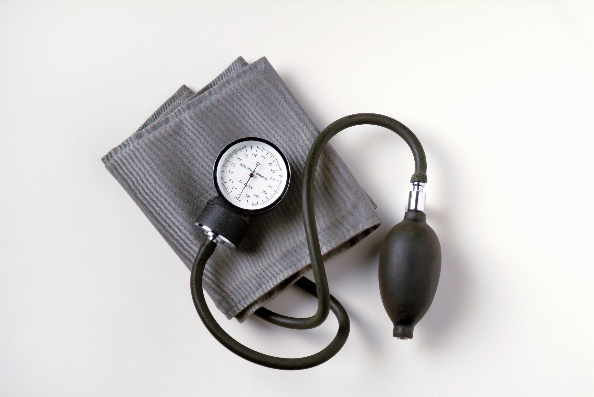
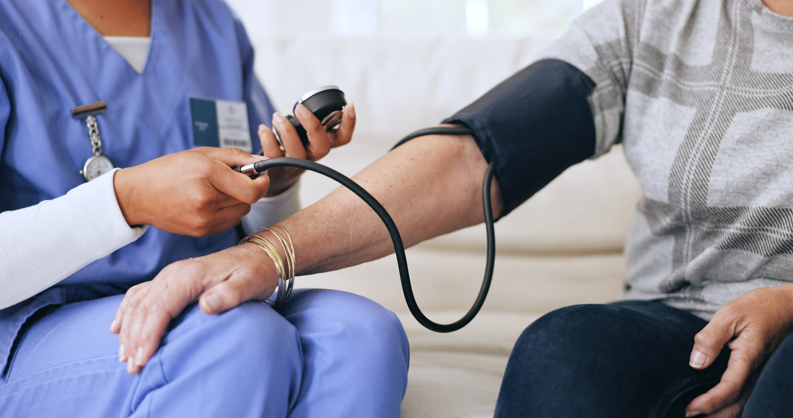
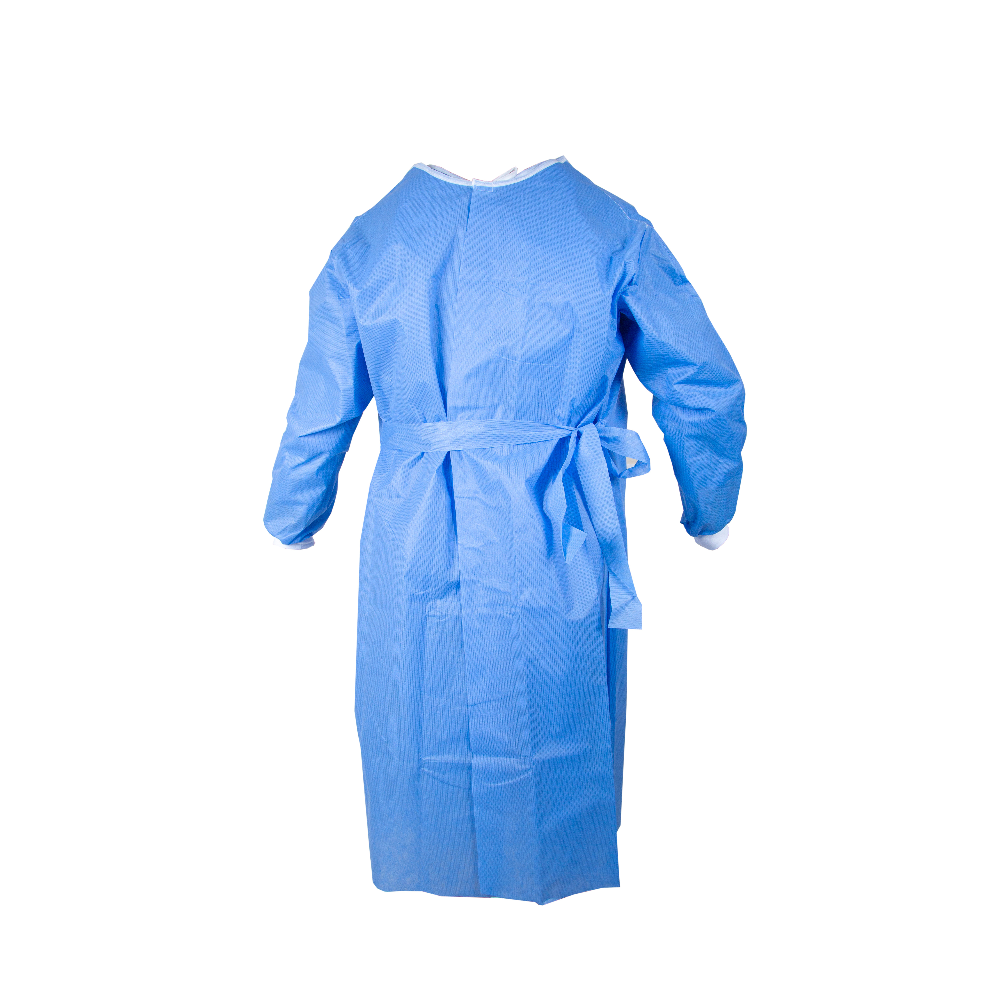
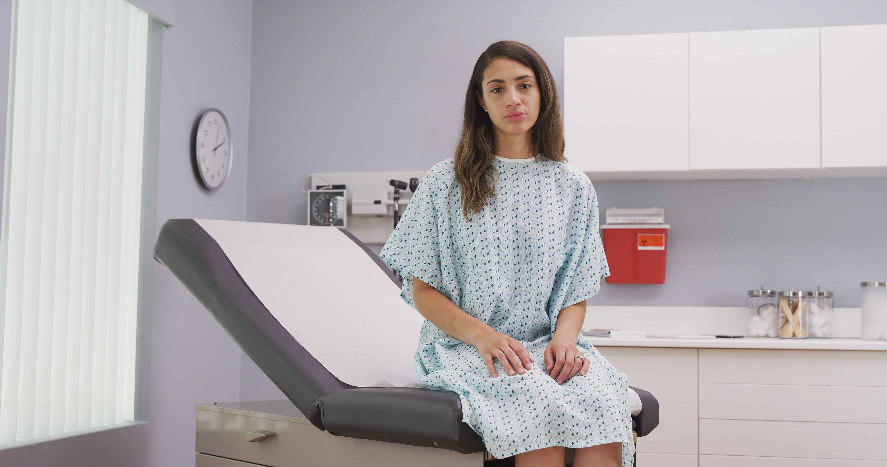

Rooming and Preparing a Patient
After check-in, you will bring your patient to the exam room and prepare them to meet with the doctor. Your role as a medical assistant includes some key tasks, which ensure patient safety during their visit. Hover over each of the images below to learn more about how you support patient safety.




